1.修改菜单
首先到NX安装目录下，寻找UGII文件夹，进入后创建你的二次开发项目文件夹（我的是Usr），再进入你的项目文件夹中创建”startup”和”application”文件夹(不区分大小写)，其中”startup”保存的是菜单栏，任务栏的空间按钮文件；”application”储存的是动态链接库(*.dll)文件。如下图所示：
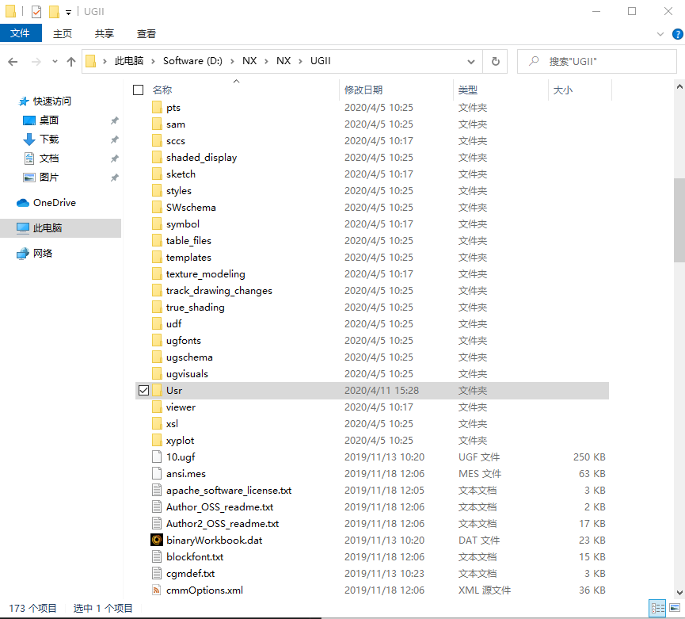
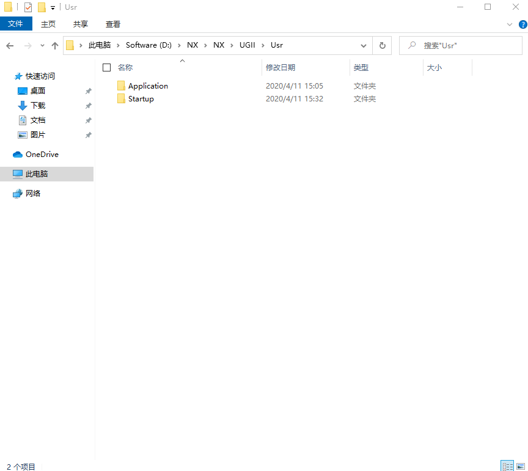
在UGII文件夹中寻找名为”menus”的文件夹，进入文件后寻找名为”ug_main.men”文件，打开该文件，在”TOP_MENU”代码块中任意位置（建议在Help之后），写下注入菜单栏的Menuscript代码：
1 | CASCADE_BUTTON Test_Button |
其中Test_Button为一级菜单名称，此处的名称与下文的*.men文件名必须要一致。步骤如图：
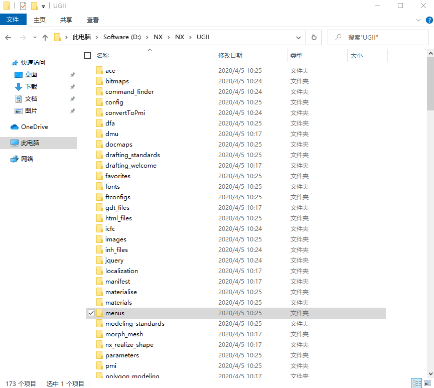
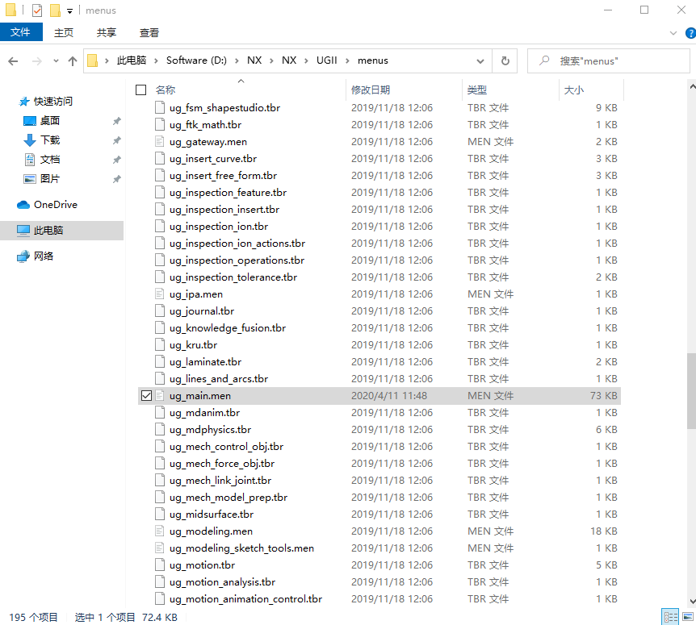
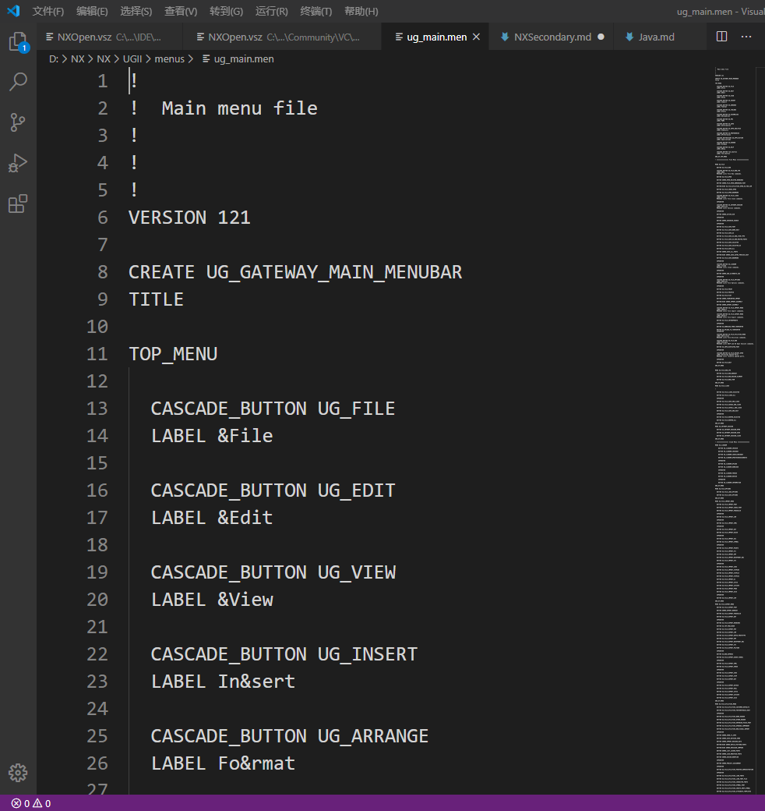
再次进入到项目文件夹(我的是Usr)，在”startup”文件夹内新建名为”Test_Button.men”的文件（此处*.men的名字一定要与上述”ug_main.men”中添加的CASCADE_BUTTON一致），打开文件写入以下代码：
1 | VERSION 121 |
需要注意的是，”VERSION”关键字对应的版本号根据实际使用的NX版本不同而不同，此处不需要修改；每一个代码块均由
1 | 关键字 控件名 |
构成，在代码块中书写菜单属性，BUTTON表示Menuscript变量名，LABEL表示控件实际名称，Actions表示动作事件。还有其他菜单属性，可参考UG开头的UGXXX文件夹中部分men文件的写法。此时ACTIONS可不写任何参数。菜单部分修改完毕。
2.添加环境变量
在环境变量中新建名为”UGII_USER_DIR”的环境变量，并添加对应值为项目文件夹(我的是”D:\UGII\Usr”，即application和startup上一级文件路径)，此时环境变量添加完毕。如图：
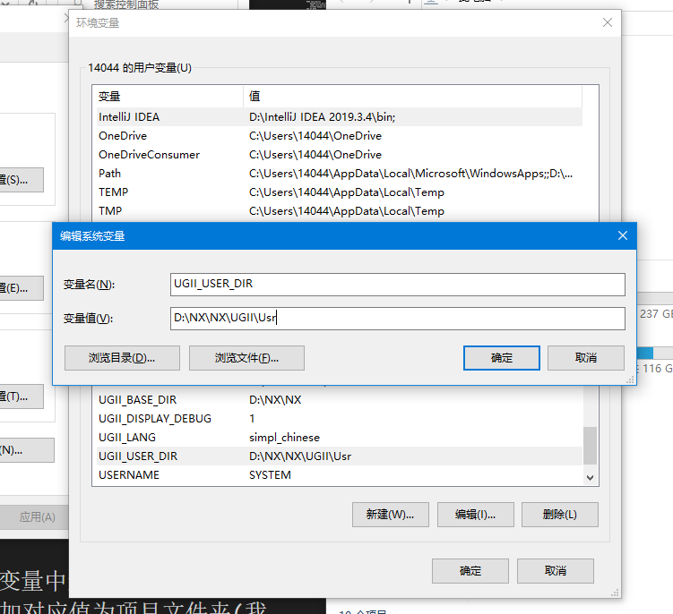
3.搭建Visual Studio环境
笔者使用的是Visual Studio 2019，其他各版的VS只是在版本号和C++编译器上有区别，使用上没有区别。首先找到NX根目录下的UGOPEN文件夹，打开后找到”vs_files”文件夹，进入”VC”文件夹，找到”vcprojects”，修改”NXOpenCPP.vsz”和”NXOpen.vsz”，按照下图修改，其中只需要修改Wizard=VsWizard.VsWizardEngine.后对应的版本号，VS2017对应15.0，VS2019对应16.0，修改完后保存退出。
1 | VSWIZARD 7.0 |
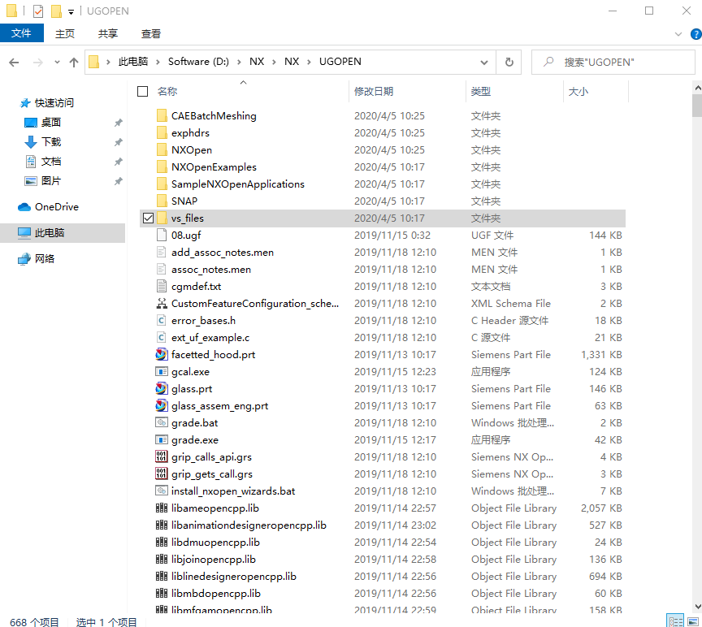
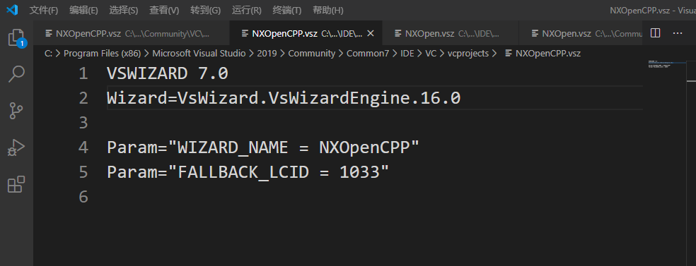
回到上一级目录复制”VC”文件夹，再找到Visual Studio安装目录(若默认安装，则在”C:\Program Files (x86)\Microsoft Visual Studio”)，进入数字文件夹(安装2017则进入2017，2019则进入2019)，按照如下路径”X:\Program Files (x86)\Microsoft Visual Studio\2019\Community”，将刚才复制好的VC文件夹粘贴至此，会提示覆盖。(若后续NXOpen项目无法创建成功，则将VC文件夹再复制到”C:\Program Files (x86)\Microsoft Visual Studio\2019\Community\Common7\IDE”中即可)。此时VS环境配置完成。
此外，还可以使用Clang，MinGW等编译器进行编译。
4.新建NXOpen项目
打开Visul Studio，新建项目，选择NXOpen C++。
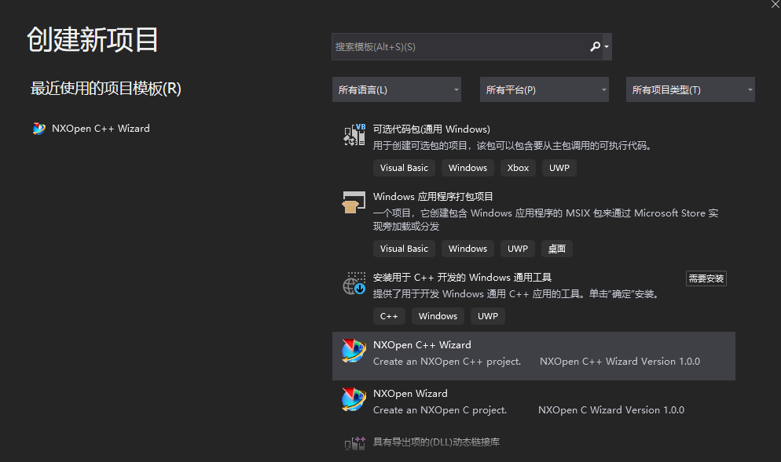
此处的项目名称需要注意，此处名称与stratup文件夹下的*.men文件中的ACTIONS后的名称要一致。
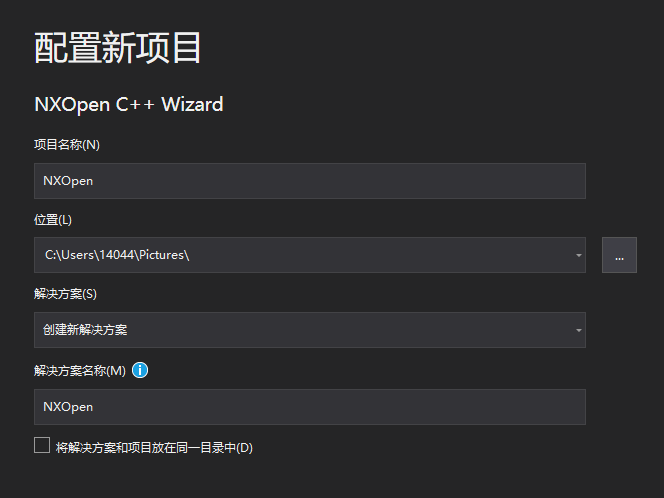
下一步。
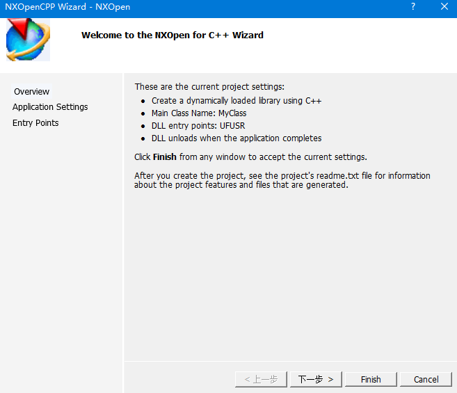
此处一定要选择DLL编译，其余不用管。
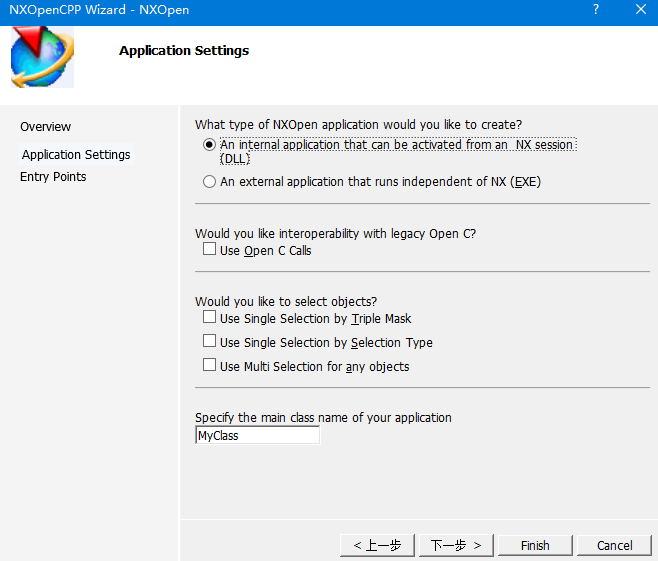
下一步，与图保持一致即可。
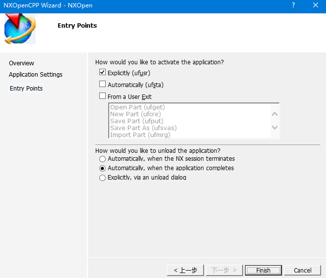
下一步，与图保持一致即可。
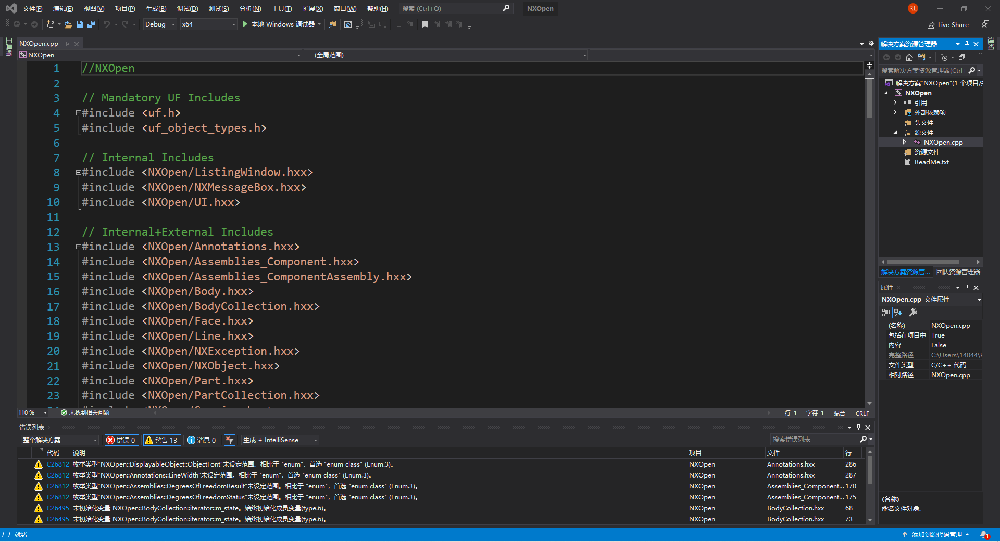
进入VS后，有一个初始生成的cpp文件。
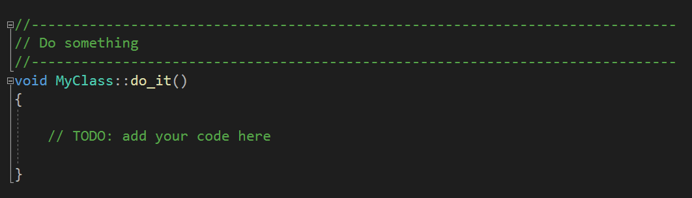
找到do_it()方法，在代码块中写入函数。
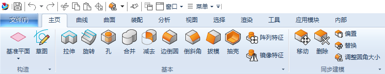
为了测试环境是否成功搭建，进行一个简单的输出对话框测试。添加头文件<NXOpen/NXMessageBox.hxx>和uf_ui.h，在do_it()中写一个简单的函数：uc1601("测试成功"，1)；
然后在Debug模式，x64环境下进行编译，编译成功后去VS项目文件夹，寻找x64/Debug/XXX.dll文件，其中XXX.dll是编译后的动态链接库(*.dll)文件，将该文件复制到NX项目文件夹(我的是Usr)中的application文件夹下。
5.测试
打开NX，找到菜单，选择自定义菜单（我的是Test_Button），选择后将在界面中弹出一个窗口提示”测试成功”。配置完成。后续代码需要结合NXOpen文档进行，测试Simcenter 3D时效果一样。
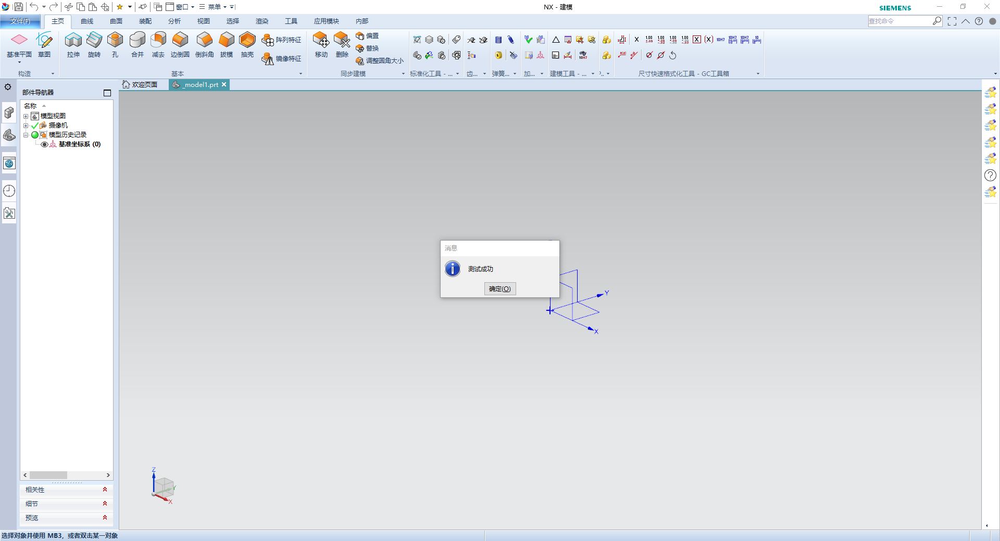
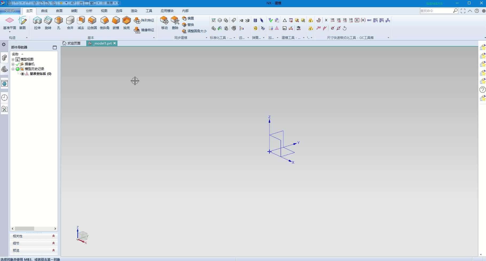